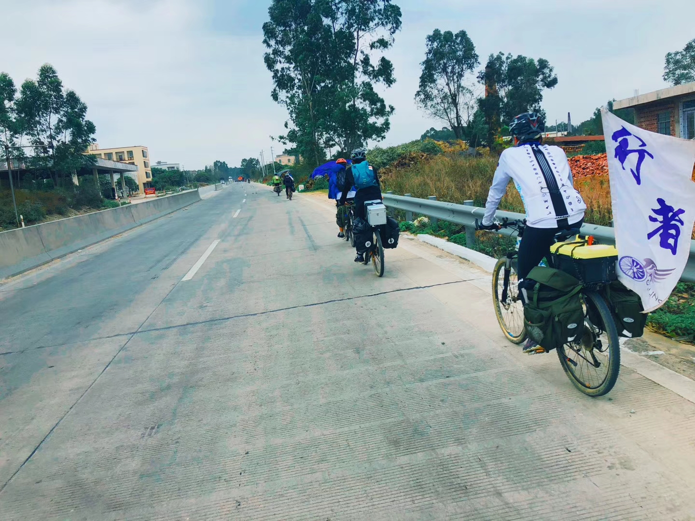

TXX小队路书
登录
注册
退出登录
主页
路书
活动
导航
联系我们

北航行者车协介绍
中文全称：北京航空航天大学行者自行车协会
英文全称：Air-CyclingofBUAA
协会性质：非盈利性大学生兴趣爱好类社团
运动项目：自行车
成立时间：2010年10月7日
协会结构: 行者车协由会长及会长团领导，并设有办公室、宣传部、外联部、活动部、技术部五个部门。 每个部门由一名部长及若干名干事组成。
日常活动:
单日骑游：时间多定在周六，内容主要是以强度为中低级的骑游为主，主要由活动部负责。
多日拉练：时间多定在多日法定节假日（清明、五一、端午、十一、中秋等），内容是以强度为中高级的拉练为主，主要有活动部负责。
外联交流：时间不定期，内容主要是参加兄弟车协生日庆、参加交流会、参加交流比赛以及筹办行者车协生日庆等活动，主要由外联部负责。
校内活动：时间不定期，内容主要是面向校内广大师生的车协宣传活动，如组织举办校内趣味赛、组织观看励志骑行电影、组织技术培训讲座等，主要有宣传部负责。
义务修车：时间为每周五下午3点到5点，地点在四栋公寓楼之间，内容是面向广大师生的义务修车活动，如组装折叠车、补胎、调刹车等，主要由技术部负责。
远征:
2014年7月15日——2014年8月11日【丽江——拉萨】
滇藏之旅
人数：14人
里程：1900KM
2014年7月13日——2014年8月2日【桂林——九寨沟】
桂林——九寨沟
人数：7人
里程：1500KM
2013年7月6日——2013年7月28日【北京——大连】
北京——大连之旅
人数：4人
里程：1700KM
曾获奖项：
行者车协在2013-14年度北航优秀社团中被评为“五星级社团”
行者车协在2014-15年度北航优秀社团中被评为“五星级社团”
行者车协在2016年荣获“全球百家体育公益社团”。
行者车协在2015-16年度北航优秀社团中被评为“五星级社团”
行者车协在2016-17年度北航优秀社团中被评为“五星级社团”
行者车协在2017-18年度北航优秀社团中被评为“五星级社团”